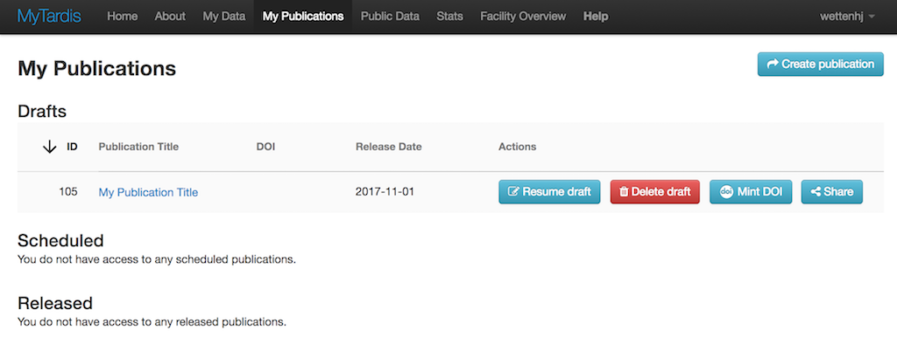

MyTardis Publication Workflow¶
Basic Usage¶
Listing Existing Publications and Drafts¶
Click on “My Publications” in the menu bar to see existing publications and drafts which you have access to:
{kind=link}
Creating a Draft Publication¶
From the “My Publications” page, click “Create publication” to begin a draft publication:

The publication form should appear, showing whatever introductory text has
been configured by your MyTardis administrator, using the
PUBLICATION_INTRODUCTION setting in tardis/settings.py:

After acknowledging the introductory text, you can begin selecting datasets to include in your publication:
Selected datasets appear on the right:

You can then describe each included dataset (beyond what is already in the dataset’s description field):

The final page allows you to specify the authors, license, acknowledgements and release date. The last page of the form will be split into two pages in the next version of the publication form.

After clicking “Save and finish Later”, you can see the publication in the Drafts section of the “My Publications” page:
Resuming a Draft Publication¶
The “Resume draft” button below opens the publication form, allowing you to make further changes:
When resuming a draft, you will be taken straight to the second page of the publication form below, skipping the introductory text:
Deleting a Draft Publication¶
The “Delete draft” button below allowd you to delete a draft publication:
You will be asked to confirm that you really want to delete the draft publication:

Minting a DOI (Digital Object Identifier)¶
The “Mint DOI” button below allowd you to mint a DOI (Digital Object Identifier):
You will be asked to confirm that you really want to mint a DOI:

Sharing a Draft Publication¶
The “Share” button below opens temporary links dialog, allowing you grant short-term access (3 months) to the draft publication via a temporary URL:
The first time you click Share, you won’t have any tokens for granting temporary access:

After clicking the “Create New Temporary Link” button, you should see a temporary link:

For MyTardis System Administrators¶
Enabling or Disabling the Publication Workflow¶
The publication workflow is enabled by default in a new MyTardis installation:
tardis/default_settings/apps.py:
...
INSTALLED_APPS = (
...
'tardis.apps.publication_workflow',
...
)
If necessary, it can be disabled in tardis/settings.py as shown below:
disabled_apps = ['publication_workflow']
for app in disabled_apps:
INSTALLED_APPS = filter(lambda a: a != app, INSTALLED_APPS)
When the publication workflow is enabled, you should see the “My Publications” link in the menu bar:

Publication Workflow Settings¶
To use the default publication workflow settings, add the following to your tardis/settings.py:
from tardis.apps.publication_workflow.default_settings import *
Installing Licenses¶
The publication workflow app contains Creative Commons licenses in
tardis/apps/publication_workflow/fixtures/licenses.json which
can be installed with:
python mytardis.py loaddata licenses
Minting DOIs¶
From Wikipedia, “a Digital Object Identifier or DOI is a persistent identifier or handle used to uniquely identify objects, standardized by the International Organization for Standardization”. For example, a DOI of “10.2196/mhealth.3314” can be resolved at http://dx.doi.org/10.2196/mhealth.3314, leading to http://mhealth.jmir.org/2014/4/e50/. DOIs are commonly used to provide permanent links to published articles, but they can also be used to provide permanent links to published data.
MyTardis’s publication workflow provides functionality for minting DOIs using Monash University’s DOI minting service at https://mod.monash.edu and its corresponding test service at https://vera186.its.monash.edu/modc/. DOIs can be minted manually by MyTardis system administrators, or from the user interface provided in the “My Publications” view.
To get started, you need to register your MyTardis service as a “Webservice App” in Monash’s DOI-minting service at https://mod.monash.edu or in its corresponding test service at https://vera186.its.monash.edu/modc/.

Then you need to configure your MyTardis’s tardis/settings.py to use the DOI minting service. For the “mytardis-demo” DOI-minting application registered above on https://vera186.its.monash.edu/modc/, we can use the following settings:
MODC_DOI_ENABLED = True
MODC_DOI_API_ID = '514a087f-30eb-4860-a0ad-79a92e875564'
# Use the real API password here:
MODC_DOI_API_PASSWORD = '********'
MODC_DOI_MINT_DEFINITION = 'https://vera186.its.monash.edu/modc/ws/MintDoiService.wsdl'
MODC_DOI_ACTIVATE_DEFINITION = 'https://vera186.its.monash.edu/modc/ws/' \
'ActivateDoiService.wsdl'
MODC_DOI_DEACTIVATE_DEFINITION = 'https://vera186.its.monash.edu/modc/ws/' \
'DeactivateDoiService.wsdl'
MODC_DOI_ENDPOINT = 'https://vera186.its.monash.edu/modc/ws/'
# The MODC_DOI_MINT_URL_ROOT should be set to the base URL of your publicly
# accessible MyTardis server. You can't test the DOI-minting functionality
# from a local dev environment (http://127.0.0.1:8000), because the URL you
# are minting a DOI for needs to be publicly accessible:
MODC_DOI_MINT_URL_ROOT = 'https://mytardisdemo.erc.monash.edu'
A DOI can be minted from the Django shell (mytardis.py shell_plus) as follows:
>>> from tardis.apps.publication_workflow.doi import DOI
>>> doi = DOI()
>>> experiment_id = 105
>>> doi.mint(experiment_id, reverse('tardis_portal.view_experiment', args=(experiment_id,)))
10.5072/20/TEST_DOI_5a14bcdd0f309
Now http://dx.doi.org/10.5072/20/TEST_DOI_5a14bcdd0f309 should resolve to https://mytardisdemo.erc.monash.edu/experiment/view/105/.
We can then deactivate this DOI until the required publication criteria are met:
>>> doi.deactivate()
(reply){
serviceId = "514a087f-30eb-4860-a0ad-79a92e875564"
responsecode = "MT003"
message = "DOI 10.5072/20/TEST_DOI_5a14bcdd0f309 was successfully deactivated."
doi = "10.5072/20/TEST_DOI_5a14bcdd0f309"
url = None
verbosemessage = None
}
If we need to look up the same DOI later, e.g. after exiting the Django shell and starting a new one, we can create a DOI instance with an existing DOI:
>>> from tardis.apps.publication_workflow.doi import DOI
>>> doi = DOI('10.5072/20/TEST_DOI_5a14bcdd0f309')
>>> doi.activate()
(reply){
serviceId = "514a087f-30eb-4860-a0ad-79a92e875564"
responsecode = "MT004"
message = "DOI 10.5072/20/TEST_DOI_5a14bcdd0f309 was successfully activated."
doi = "10.5072/20/TEST_DOI_5a14bcdd0f309"
url = None
verbosemessage = None
}
For a complete list of the possible response codes, see: https://documentation.ands.org.au/display/DOC/Cite+My+Data+M2M+Service+Responses